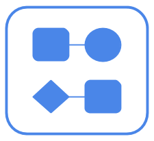

-
lvap
The Light Virtual Access Point (LVAP) abstraction allows developers to describe the desired state of the network leaving to the controller the task of implementing it.

-
lvnf
The Light Virtual Network Function (LVNF) abstraction allows developers to perform custom packet processing operations on a precise subset of the traffic.

-
resource pool
The Resource Pool abstraction allows developers to provision resources across different technologies using a common high-level logical model.